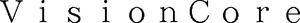

Trade Mark Journal No.2025/049 5 December 2025
WO0000001878958 (9)
Office of origin: Japan
Date of International Registration:12 May 2025
Date of designation in the UK:
12 May 2025

- Class 9
- Computer monitors; video monitors; monitors built into arcade amusement machines; monitors built into arcade game machines; personal computers; liquid crystal display monitors; televisions; electronic notice boards; digital signage; computer graphics boards; graphic cards; electronic circuits, magnetic disks, magnetic tapes, optical disks, magneto-optical disks recorded with computer programs for controlling the transmission and reception of, displaying, or recording image or sound data; electronic circuits, magnetic disks, magnetic tapes, optical disks, magneto-optical disks recorded with computer programs for encoding, decoding or editing image or sound data; electronic circuits, magnetic disks, magnetic tapes, optical disks, magneto-optical disks recorded with computer programs for image capturing, recording, distributing or displaying; electronic circuits, magnetic disks, magnetic tapes, optical disks, magneto-optical disks recorded with computer programs for controlling image capturing device, recording device, distributing device or displaying device; electronic circuits, magnetic disks, magnetic tapes, optical disks, magneto-optical disks recorded with computer programs for managing [including quality control] image capturing device, recording device, distributing device or displaying device; electronic circuits, magnetic disks, magnetic tapes, optical disks, magneto-optical disks recorded with computer programs; recorded computer programs; downloadable computer programs; computer software for controlling images displayed on a monitor; computer software for quality control [QC] of monitors; downloadable or recorded computer programs for controlling the transmission and reception of, displaying or recording image or sound data; downloadable or recorded computer programs for encoding, decoding, or editing image or sound data; downloadable or recorded computer programs for image capturing, recording, distributing, or displaying images; downloadable or recorded computer programs for controlling image capturing device, recording device, distributing device or displaying device; downloadable or recorded computer programs for managing [including quality control] image capturing device, recording device, distributing device or displaying device; downloadable or recorded computer programs for computer network systems; computers for transmission control of image or sound data; computers for transmission and reception of image or sound data; computers for encoding, decoding, and editing image or sound data; computers for image capturing, recording, distributing or displaying; computers for controlling image capturing device, recording device, distributing device or displaying device; computers for managing [including quality control] image capturing device, recording device, distributing device or displaying device; telecommunications equipment; photographic equipment; cinematographic machines and apparatus; optical machines and apparatus; video surveillance cameras; integrated circuits; monitor stands; luminance sensors; colorimeters; video signal distributors; video signal splitters; video signal converters; apparatus for wireless data transmission between a computer and computer peripherals; switching apparatus for selectively using multiple computers; video telephones; electric cables; mouses [data processing equipment]; remote controller for televisions; cameras; apparatus for recording data; signal transmission apparatus; video servers; Internet servers; computer servers; communication servers [computer hardware]; servers for computer network systems; computer software for controlling and managing access server applications; monitor hoods; 3D spectacles; panel protectors for monitors; mounting brackets adapted for small electronic devices or electronic devices for virtual desktops; mounting brackets adapted for computer monitors; touch screen pens; keyboards.
EIZO Corporation
Representative: SK INTELLECTUAL PROPERTY LAW FIRM, Hulic Daikanyama Building 3rd Floor #301,, 2-20-17, Ebisu-nishi,, Shibuya-ku, Tokyo 150-0021, JAPAN